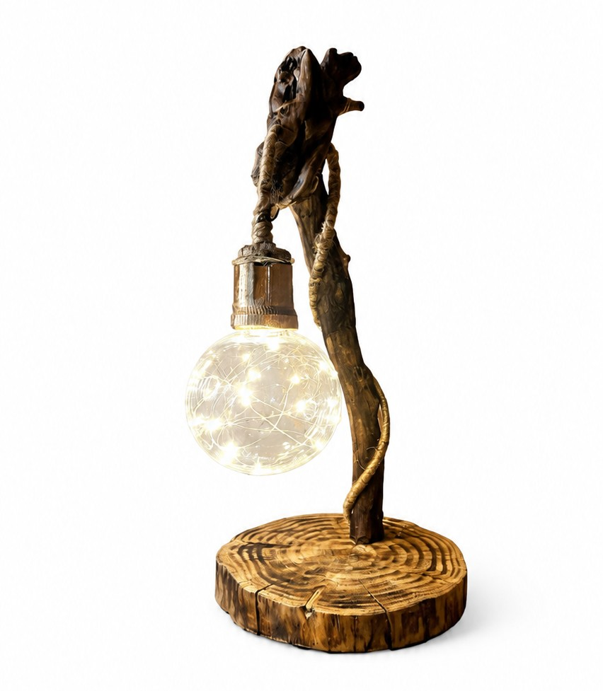

01
Кит
Декоративный держатель для туалетной бумаги или салфеток. Добрый морской образ добавляет ванной комнате или интерьеру немного уюта и фантазии.
Небольшая деталь, которая напоминает о море и создаёт спокойное настроение.
Связаться со мнойАвторские изделия ручной работы
Добро пожаловать в Natelier — небольшую коллекцию необычных и уютных изделий Натальи.
Смотреть работыКоллекция
01
Декоративный держатель для туалетной бумаги или салфеток. Добрый морской образ добавляет ванной комнате или интерьеру немного уюта и фантазии.
Небольшая деталь, которая напоминает о море и создаёт спокойное настроение.
Связаться со мной02
Оригинальный держатель для туалетной бумаги, который превращает обычную полезную вещь в забавную деталь интерьера.
Пусть каждое утро начинается с улыбки, хорошего настроения и маленькой лягушки, которая делает пространство добрее.
Связаться со мной
Фото работы03
Декоративный светильник с деревянными деталями. Он предназначен для создания мягкого, тёплого освещения и уютной атмосферы.
Натуральное дерево и тёплый свет помогают сделать комнату особенно домашней.
Связаться со мной Фото работы
Фото работы
04
Изящная икорница в форме морской раковины с золочёным краем, дополненная фигурной ложечкой на длинной ручке. Идеальна для подачи икры, оливок или других деликатесов на праздничном столе.
Благородный перламутровый оттенок и золотые акценты превращают обычную сервировку в маленькое торжество — деталь, которая сразу задаёт тон всему столу.
Связаться со мной Фото работы
Фото работы
05
Подставка для благовоний в виде раковины с золотой окантовкой и жемчужиной у основания — сюда удобно закрепить тлеющую ароматическую палочку, не боясь испачкать поверхность стола.
Тёплый морской образ и мягкое сияние золота создают атмосферу спокойствия — идеально для вечера, когда хочется немного тишины и лёгкого аромата вокруг.
Связаться со мной Фото работы
Фото работы
06
Настенное панно ручной работы в виде лунной поверхности с рельефными кратерами, светящееся в темноте. Днём — стильный акцент на стене с фактурной, почти живой текстурой; ночью — мягкое таинственное свечение.
Такая деталь интерьера напоминает о бескрайнем небе и добавляет комнате немного волшебства, особенно когда гаснет свет.
Связаться со мной Фото работы
Фото работы
07
Подставка для карандашей и ручек в виде уютного деревянного городка: домики из натуральной коры, крошечный «музей» с голубой дверью и табличка с надписью «Следуй за светом мечты!». Карандаши удобно располагаются в стволе-подставке рядом с домиками.
Такая композиция превращает рабочий стол в маленькую сказочную сцену — вещь, на которую хочется смотреть, а не просто использовать по назначению.
Связаться со мной Фото работы
Фото работы
08
Компактная подставка для зубочисток в виде пары деревянных домиков с корой на крыше и гнёздышком с яичками наверху. Сами зубочистки хранятся в отдельном деревянном цилиндре рядом.
Тёплая, почти кукольная сценка добавляет уюта даже самой обыденной кухонной мелочи — маленькая деталь, которая дарит настроение.
Связаться со мной Фото работы
Фото работы
09
Декоративный светильник ручной работы: изогнутая ветвь, обвитая натуральной верёвкой, держит на одном конце стеклянный плафон, а на другом — фигурку птицы, установленную на природном камне.
Природные материалы и ручная работа создают ощущение маленькой лесной истории, застывшей на прикроватном столике или книжной полке.
Связаться со мной Фото работы
Фото работы
10
Декоративная тыква оранжевого цвета, украшенная нежными персиковыми цветами из ткани и зелёными листьями — яркий акцент для праздничного хэллоуинского или осеннего декора.
Такая деталь мгновенно добавляет интерьеру тёплого осеннего настроения и уюта, напоминая о сборе урожая и первых прохладных вечерах.
Связаться со мной Фото работы
Фото работы
11
Декоративная тыква благородного серо-бежевого оттенка, украшенная пудрово-розовой гортензией, золотистым цветком и шишкой — более сдержанный и элегантный вариант осеннего декора.
Спокойная цветовая гамма делает эту тыкву универсальным украшением: она одинаково хорошо впишется и в хэллоуинскую композицию, и в повседневный осенний интерьер дома.
Связаться со мнойНемного обо мне
Мне 47 лет, и уже два года я занимаюсь рукоделием. Мне нравится создавать вещи своими руками, придумывать необычные детали и превращать простые материалы в изделия с характером.
Я стараюсь постоянно развиваться, пробовать новые идеи и создавать всё больше интересных работ. Эта коллекция будет постепенно расширяться.
Natelier — это просто тёплый список моих работ, созданных с любовью.
Будем на связи
Если вам понравилась работа или вы хотите узнать о ней подробнее, буду рада вашему сообщению.
Звонки принимаются ежедневно с 9:00 до 22:00.
Пожалуйста, звоните в это время.